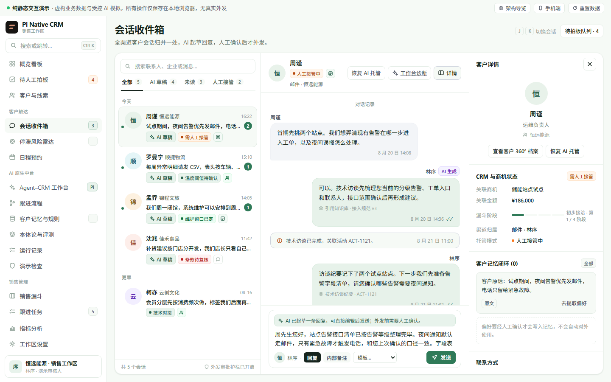

演示场景 · 恒远能源
储能站点试点
“试点期间，夜间告警优先发邮件，电话只留给紧急故障。”周谨 · 客户原话 MSG-1122
已完成的业务活动站点接入技术访谈
ACT-1121
销售下一步 这笔商机现在可以进入技术评估吗？
AI 原生 CRM
把客户原话、商机记录和企业资料放进同一次判断。Agent 找依据、提建议，负责人决定是否推进。执行后再回查实际结果。
打开演示台 合成业务数据 · 在浏览器中体验演示场景 · 恒远能源
“试点期间，夜间告警优先发邮件，电话只留给紧急故障。”周谨 · 客户原话 MSG-1122
ACT-1121
销售下一步 这笔商机现在可以进入技术评估吗？
一笔商机的活动、原话和政策资料常在不同地方。销售需要知道这次判断用了什么，以及下一步由谁负责。
按商机和 UTC 时间窗查询业务记录，只把已完成的约见作为阶段判断依据。缺证时留下缺项。
把证据和阶段变化一起提交人审。批准、执行、回查分别留记录，销售能对照实际阶段和回执。
从授权会话提取待审偏好，负责人核对原文后确认。新会话只读取这位客户仍有效的确认事实。
沿受控运行路径看请求怎么执行，再看事实从哪里读取、审批怎样落库，以及轨迹如何进入观测。
工作台限定组织、角色和商机范围，Worker 领取已落库作业。Pi 经许可工具读取业务数据与资料，由负责人审批阶段变更，执行后回到 SQL 核对状态。
沿箭头看进入下一步的条件。只读任务可以直接完成，阶段变更要等人工决定；不确定的结果会停下来核对。
只读任务可以直接完成。阶段写入等待人工批准。证据缺失、提案拒绝或写入结果不明时，保留相应记录供复核。
以储能试点为例，Agent、负责人和系统各自留下什么记录。
待批准的阶段提案
ACT-1121用授权工具读取指定商机的约见结果，把活动 ID 和目标阶段交给审核人。
核对客户范围和活动原文。拒绝会保留原阶段；批准后，提案进入待执行。
执行产生一条变更回执。续跑时将商机阶段与回执核对后归档。
确认记忆也有人审。 客户原话先生成待审候选，确认后才供新会话读取。撤回后停止召回，原审核记录可回查。
界面把判断过程摊开。运行、审批和回执各自留痕，刷新页面后仍有据可查。

会话、看板、工作台按同一客户联动。工作台展开工具回执，运行记录用于复查过去的决定。
正式应用由 Next.js 接收请求，Node.js Worker 从持久队列领取任务，PostgreSQL 保存运行和业务事实。
Langfuse 关联脱敏轨迹和耗时。规则核对字段、引用和业务动作，语义复核检查回答是否得到证据支持。